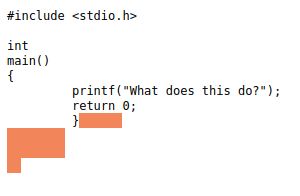

Jaws: un lenguaje de programación invisible
El DNS traduce los nombres de dominio a direcciones IP para que los navegadores puedan cargar los recursos de Internet.
20 October 2021
Jaws de Christopher James May es un lenguaje de programación interpretado que tiene una peculiaridad importante: está compuesto completamente por caracteres de espacios en blanco y puede coexistir fácilmente con otros lenguajes de programación para crear código políglota.
Instalación
$ git clone https://github.com/lawndoc/jaws.git
$ cd jaws
$ make && make install
Herramientas
Jaws - virtual machine
Jaws es un lenguaje interpretado, por lo que se ha creado una máquina virtual para ejecutar programas de Jaws. El código fuente de la máquina virtual y la especificación del lenguaje para Jaws se pueden encontrar en el directorio jawsVM.
finc - Compilador Fin-to-Jaws
Debido a que las instrucciones de Jaws están compuestas en su totalidad por caracteres invisibles, se ha creado una versión visible de Jaws, llamada Fin. Fin te permite escribir programas de Jaws de forma visible y depurable por humanos. Una vez que haya escrito un programa Fin, puede compilarlo en Jaws usando el compilador 'finc'. El código fuente del compilador y la especificación del lenguaje para Fin se pueden encontrar en el directorio finCompiler.
Ejemplo
Para ver un ejemplo rápido usamos por ejemplo el código c políglota del repo:

Esos espacios del final es lo que va a interpretar jaws.
Primero compilamos y ejecutamos el programita en c:
$ gcc -g 420.c -o 420
$ ./420
What does this do?
y luego hacemos lo propio con jaws:
$ ./jaws tests/420.c
420
Vemos la salida con debug 1:
$ ./jaws -d 1 tests/420.c
Executing Jaws program...
Stack Push: 0
Stack Push: 2
Stack Push: 4
Output Character: 4
Output Character: 2
Output Character: 0